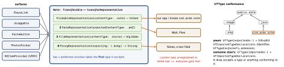

swiftui · folio
In one line: Transferable (iOS 16) describes once, as an ordered list of
representations keyed by UTType, how a value leaves and enters the app; ShareLink,
.draggable, .dropDestination, PasteButton and PhotosPicker all consume it —
replacing separate UIActivityItemSource, NSItemProvider and UIPasteboard code.
Download PDF Print view LaTeX source


How it works
- Representations (result builder, order = preference): Codable (JSON by default); Data (
exporting:/importing:closures, whole blob in RAM); File (a file URL, lazy — export returnsSentTransferredFile, import getsReceivedTransferredFilewhose.fileis temporary — copy it before returning); Proxy (reuseString,URL,Data,Image). Modifiers:.suggestedFileName,.exportingCondition. - Drag & drop:
.draggable(item) { preview };.dropDestination(for: T.self) { items, location in … return true } isTargeted: { }. Only offered types that matchTarrive. - Share:
ShareLink(item:subject:message:preview: SharePreview(title, image:)). - Paste:
PasteButton(payloadType:)— the tap is consent, so no “Allow Paste” alert (iOS 16 alerts on programmatic reads of another app’s content; UIKit:UIPasteControl). PhotosPicker(selection:matching:)(16) runs out of process — no photo-library permission; the app sees only picked items.await item.loadTransferable(type:)(in.task(id: item)) returnsT?:nil= type not offered,throws= load failed. Video → your ownFileRepresentationtype.- Files:
.fileImporterhands back security-scoped URLs outside your sandbox;.fileExporterwrites aFileDocument(17 adds aTransferableform). - UIKit bridge:
UIDragItem(itemProvider:),UIDropInteraction,UIActivityViewController.NSItemProvidergainedregister(_:)for aTransferableandloadTransferable(type:)(16); older SwiftUI:.onDrag/.onDrop(of:).
Example — one type, every surface
extension UTType {
static let note = UTType(exportedAs: "com.acme.note") }
struct Note: Codable, Transferable {
var title: String; var body: String
static var transferRepresentation: some TransferRepresentation {
CodableRepresentation(contentType: .note) // richest first
ProxyRepresentation(exporting: \.body) // fallback: text
} }
Text(note.title).draggable(note)
Color.clear.dropDestination(for: Note.self) { notes, _ in
inbox += notes; return true }
ShareLink(item: note, preview: SharePreview(note.title))Security-scoped URLs
.fileImporter(isPresented: $open,
allowedContentTypes: [.pdf]) { r in
guard case .success(let url) = r,
url.startAccessingSecurityScopedResource() else { return }
defer { url.stopAccessingSecurityScopedResource() } // balance!
let data = try? Data(contentsOf: url)
saved = try? url.bookmarkData() // persist THIS, not the path
}Next launch: URL(resolvingBookmarkData:…, bookmarkDataIsStale:); stale ⇒ re-create the bookmark while you have access. Unbalanced start calls leak kernel resources.
Traps
- Silent drop rejection:
dropDestination(for: URL.self)never fires for a photo from Photos — it offers image data, not a file URL. Accept what is actually offered. - 200 MB video as
DataRepresentation— materialised in RAM, memory spike / jetsam. UseFileRepresentation. ReceivedTransferredFile.fileused after the closure — gone; copy it inside the closure.- Everyone receives plain text: the custom
UTTypeis not declared in Info.plist, or the text representation is listed first. - Saving the imported path instead of a bookmark: works in the callback, fails next launch.
Which representation?
| Codable | your own model between your apps / instances |
| Data | small binary in a standard format (PNG, PDF) |
| File | anything big, or already on disk (video, documents) |
| Proxy | “as text / as URL” fallback, no encoding code |